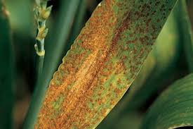
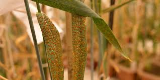
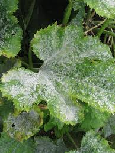
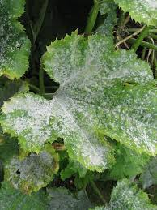

Farmers Community - Crop Selection & Social Comments
Select Your Crop
Upload Photo & Voice Recording
Community Disease Posts & Comments
-
Leaf Rust Disease Expert Verified 
My wheat crops have reddish-brown pustules on leaves.
- Rajdeep: Try using neem oil spray weekly.
- Simran: Maintain proper irrigation to reduce humidity.
- Harjit: Crop rotation with non-host crops helps.
- Expert: Use certified fungicides at recommended doses.
-
Powdery Mildew Disease Expert Verified
 

White powder-like coating on gram leaves noticed.
- Balbir: Remove infected leaves early.
- Expert: Spray sulfur dust for control.